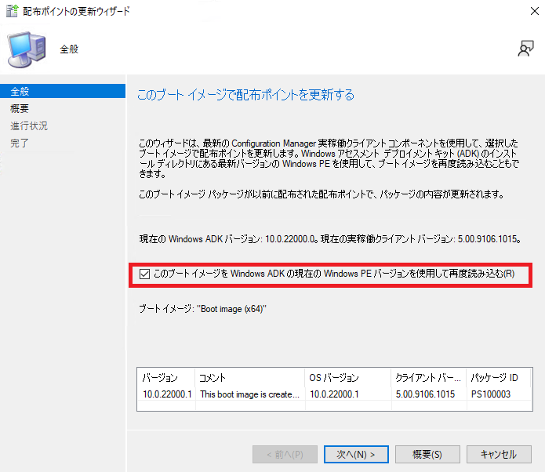
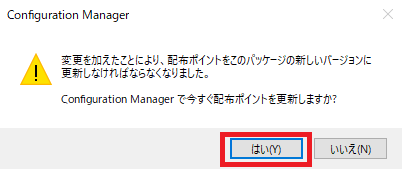
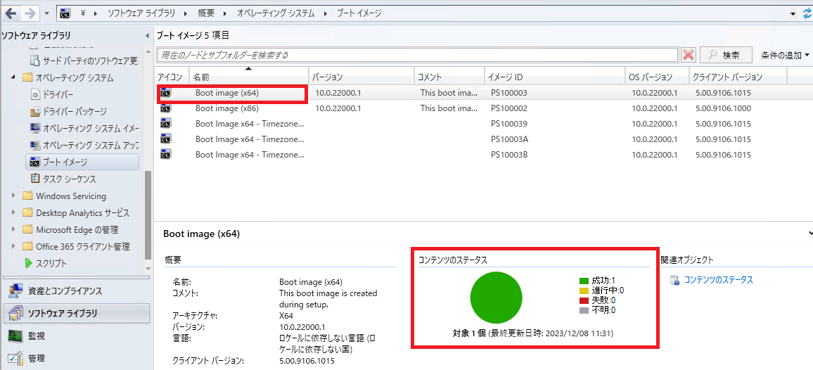
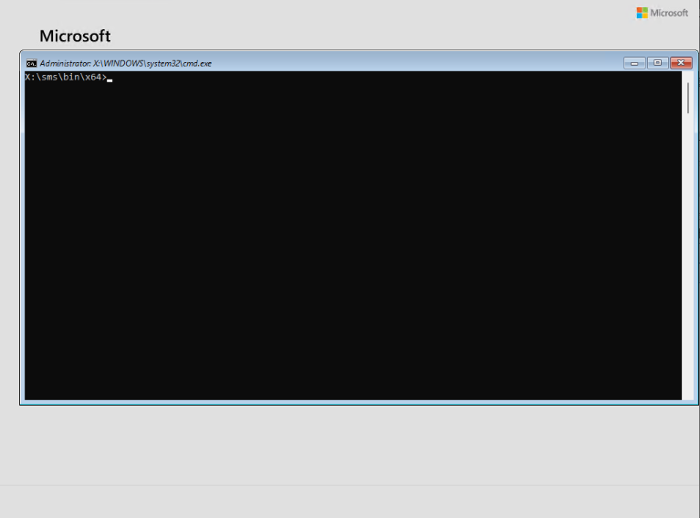
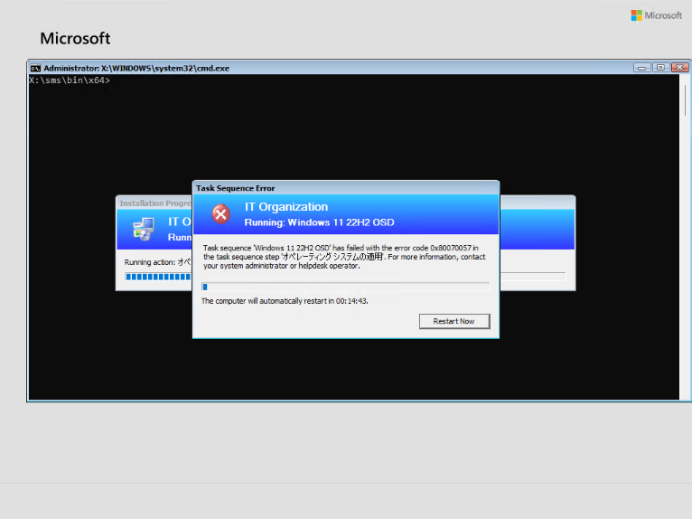

ブート イメージに含まれる Windows PE はメモリ上で展開されて起動するため、タスク シーケンスの動作ログである smsts.log ファイルは Windows PE での起動時のみ確認できます。
そのため、タスク シーケンスによる OS 展開実施中に Windows PE で実行されるステップ（ [オペレーティング システムの適用] ステップなど) で失敗した場合、PC を再起動すると調査に必要な smsts.log が取得できなくなります。
Windows PE で実行されるステップで失敗した場合は、下記でご案内する手順で採取した smsts.log をご提供くださいますようお願いいたします。
OS 展開に失敗した端末
Windows PE 上の smsts.log の採取にあたっては、Windows PE 起動時に F8 キーを押下してコマンド プロンプトが実行できるブート イメージにする必要があります。
[カスタマイズ] タブが存在しない場合
サイト サーバーにインストールされている Windows PE / Windows ADK より古いバージョンのブート イメージの場合 [カスタマイズ] タブが表示されないことがあります。その場合は、対象ブート イメージを右クリックして [配布ポイントの更新] をクリックします。配布ポイントの更新ウィザードが開くので [このブート イメージを Windows ADK の現在の Windows PE バージョンを使用して再度読み込む] をオンにして [次へ] をクリックしていき、配布ポイントの更新ウィザードを完了します。その後、[カスタマイズ] タブが表示されるかご確認ください。

3. [コマンド サポートを有効にする (テストのみ)] をオンに変更した場合、ダイアログが開くので [はい] をクリックします。続けて、配布ポイントの更新ウィザードが開くので [次へ] をクリックしていき、ウィザードを完了します。

4. 配布ポイントの更新ウィザード完了後、対象ブート イメージを選択して [最新の情報に更新] を何度かクリックし「コンテンツのステータス」で配布ポイントへのコンテンツ配布が「成功」になっていることを確認してください。（最終更新日時が作業実施以降になっていることをご確認ください。）

5. スタンドアロン メディアや起動メディアで OS 展開を行う場合、変更した後のブート イメージを使用してメディアを再作成してください。（PXE ブートで OS 展開を行う場合は不要です。）
6. OS 展開を行い、Windows PE を起動します。F8 キーを押下して、コマンド プロンプトが開くことをご確認ください。

エラー発生時、コンピューターの再起動を通知するカウントダウンが始まりますので、カウントダウン終了前に F8 キーを押下してコマンド プロンプトを開いてください。コマンド プロンプトを開いている間はカウントダウンが終了しても再起動はされません。

その後、以下の手順で smsts.log の採取をお願いいたします。
1 | dir <ドライブ文字>:\ /s /b | find "smsts" |
共有フォルダーに smsts.log をコピーする場合の例
F8 キーで開いたコマンド プロンプトで以下のようなコマンドで共有フォルダーに smsts.log をコピーします。
例) 共有フォルダー \192.168.1.10\share にコピーする場合
1 | net use \\192.168.1.10\share <アクセス可能なユーザーのパスワード> /user:<アクセス可能なユーザー名> |